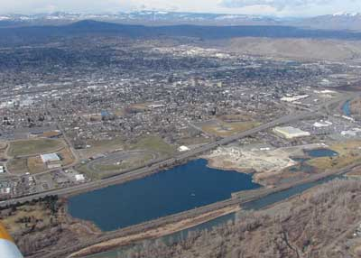
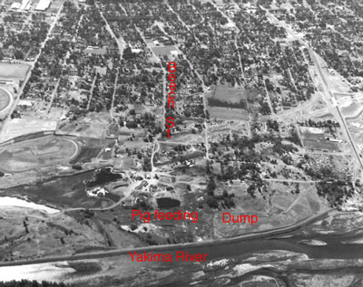
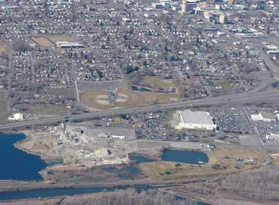
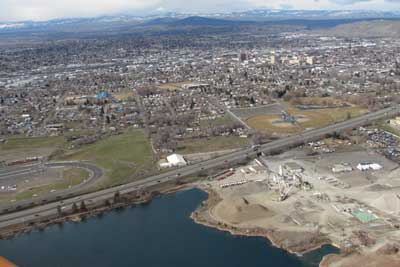
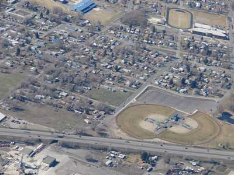
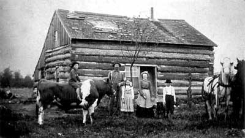

LL Buchanan Lake
Lake History ....by Lynn Buchanan

The piece of property directly south of Sarge Hubbard Park was for many years south of the county dump. The park was later built over the dump. It was commonly referred to as "the hog ranch". It often had smoke drifting across it from the smoldering pile of waste that forms the hill in the park. As a child I went to the ranch many times when my father, L L Buchanan, was going down to check on the cattle he grazed on the riverbank and the sloughs that drained into the river. The land was covered with patches of sagebrush, wild blackberry vines and scattered Cottonwood trees. There was an "old" man who watched over the cattle and did what feeding was necessary. His one room cabin was one of the few in the area. I was a rather young child at that time.
At that time there were no common houses in the hog ranch area.
There were some very sub-standard shacks there, even by the standards
of that era, most without water or electricity. Dad bought some
property with houses along Beech Street to the west of what is
now the Ice Arena, and rented them out, eventually reselling most
of them.
To the left is a photo of the area taken by me in 1962 from one
of Wikstrom's airplanes about six years after I returned from
the Air Force. The top of the photo is west. Beech Street is in
the left center of the photo, making a short jog to the south
near the east end, with a lot of dark trees on it's north side.
The south turn of Beech was because of one of the Sumach Park
ponds on it's north side. Part of the pond area now lies under
I-82 but the bend in Beech Street is still there just before Beech
goes under I-82. The pond was filled in during the late 1950's.
The current auto race track is on the left side of the photo,
as is the little building (a park concession stand) that predated
the current Ice Arena. The pond that lies between the concession
stand and the race track has been filled in and is partly under
I-82.
The old county dump is just west of the Yakima River in the foreground.
The L L Buchanan north property line is along the line of dark
trees extending to a county road leading west to the city. The
dump is to the north (right side of photo), and the Buchanan property
with the pig feeding area is to the south.

Valley Junk owned some of the property along the south side of Yakima Avenue and west of the county dump property. From there south to the north line of the L L Buchanan property was a collection of small shacks and houses of those who could not afford to live farther from the dump. The road south from Yakima Avenue was a narrow rocky lane with piles of junk and garbage dumped by those who did not want to pay the county dump fees.
This is a photo of the same area, taken by me on 8 March 2008.
You might notice that Beech Street still has the same turn to
the south, just south of the baseball diamonds, then goes under
I-82 and enters the Central Pre-Mix Concrete plant. Yakima Avenue
is on the right side of the photo. The underpass that was under
construction in the 1962 photo is just off the right side of this
photo.


This is a close-up photo of the area, taken 8 March 2008, showing
the Beech Street underpass below Interstate-82 in the lower left
corner of the photo. Beyond I-82 is part of Kiwanis Park with
ball fields and a parking lot beyond them.
The area was initially zoned by the County many years ago as Suburban
Residential. The new zoning law at that time imposed "blanket
zoning" for many areas that were not being used for the new
zoning-described purposes. The blanket zoning was an initial expedient
for planning personnel who did not want to spend the time ascertaining
actual uses of the land, or who wanted to impose their personal
desires upon other people's property.
The Hog Ranch and area were anything except suburban residential. The County planners ignored the county dump, the Valley Junk scrap operation, the farming, a dairy that was north of the County Fair Grounds, the gravel pit and cement plant. Complaints to the zoning commission were met with County responses about initial blanket zoning not binding any existing property use. The property owner objected to the zoning, and did not acquiesce to any agreement on the property use. Therefore the lawfully established prior uses and property rights prevail.
When I was elected to the City Council there was one residential zone for all of east Yakima to the then city limits. It had all been zoned as R-3 because someone felt that all the single-family homes would be removed and the area would become apartment houses. There were several small fortunes made by developers who bought a lot of the single family homes, removed them and merged the property into larger areas, then sold it to the government to build the existing low income housing units. It was then that some of the residents petitioned to change certain areas that were mostly single-family housing, to R-1 zoning. It was a bitterly fought battle between home-owners and the Real Estate interests, in front of the City Council, but the home owners eventually prevailed.
After the old county dump area was annexed by the City of Yakima, a new city zoning plan created another typical government illusion for everyone else's property. The plan's expectations of extensive park land and nice residences, by government decree created a controversy over the long established industrial and commercial use of the properties, as a gravel and concrete operation, and other non-residential uses of property in the area. By then a WalMart and a large new car dealership had moved into the "residential zone".
Economic reality left the plan where most government plans are left.
About that time in 1997 when recoverable gravel in the combined old gravel pits was exhausted in that area, the resulting pit was 120 feet deep. When Central Pre Mix shut off the pumps, it filled with water in only a few days from the surrounding water table created by the Yakima River and the cobble stone sub strata. Many people had ideas for what the new lake and adjacent land should become. But none of those folks wanted to invest their money to manifest their ideas. The land was already being used for an economically viable concrete plant and gravel stockpiling site serving the needs of the Yakima area.
The property owner's economically viable, annual planting of
a variety of seedling trees around LL Buchanan Lake and an adjacent
old settling pond (Swan Pond), will soon enough complement the
visual image of the Yakima Arboretum on the south boundary of
the lake, with patience, and at no cost to the taxpayers. Three
floating islands holding soil for trees were built for waterfowl
nesting habitat and visual interest. In dramatic visual contrast
to the sterilized, mowed grass monoculture around the Sarge Hubbard
Park pond just north of the property, what the park advocates
wanted for L L Buchanan Lake, the property owner maintains a diversely
vegetated waterfowl and small bird habitat not trampled by people.
It is viewable from the adjacent elevated public footpath on the
dike top along the east side of the lake. There were many expressions
of diverse public appreciation for the property owner defending
private property rights against the local government's utopian
park plan, especially among the birders in the Yakima area.
--Lynn Buchanan

As to the matter of history, this photo is of William Henry Buchanan and his kids at their home in Wood County Wisconsin, about 1900. The kid on the right with the white shirt and black hat is LL. That was shortly before he went west.
A team of horses and a bull you could ride in those days was the current equivalent of a new Dodge Ram pickup and a Mustang convertible. A little pricey, but the fuel cost was lower. Quiet neighborhood too.
Imagine if his Dad had told him that some day, if he worked as hard as he did his whole life, without vacations, and never retired, the largest gravel pit pond in Yakima Washington would be named for him.
Barney's Island
Betty's Island-1
Betty's Island-2
Betty's Island-3
Betty's Island-4
Betty's Island-5
Betty's Island-6
Pebbles Island
Neighbors
Swans
Birds
Trees
Trees-2
Trees-3
Lake
Links